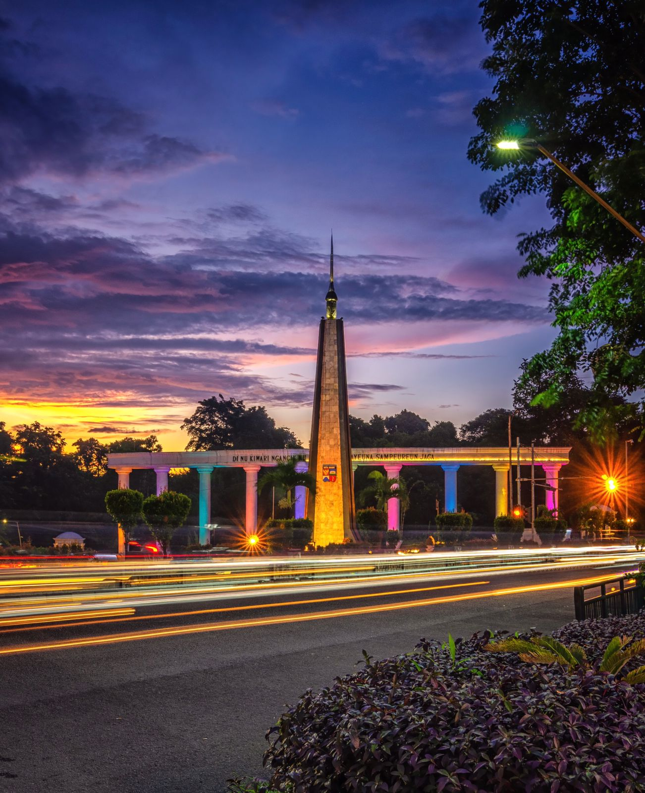

Sejarah Bogor
Bogor dikenal sejak zaman Kerajaan Sunda sebagai pusat pemerintahan Pajajaran. Pada masa kolonial, kota ini disebut Buitenzorg, tempat peristirahatan pejabat Belanda berkat udaranya yang sejuk.

SELAMAT DATANG DI
Kota hujan yang penuh sejarah, wisata, dan kuliner khas.
Bogor dikenal sejak zaman Kerajaan Sunda sebagai pusat pemerintahan Pajajaran. Pada masa kolonial, kota ini disebut Buitenzorg, tempat peristirahatan pejabat Belanda berkat udaranya yang sejuk.
Taman botani yang menjadi salah satu ikon Bogor dengan koleksi tumbuhan dan suasana yang asri.
Bangunan bersejarah yang menjadi salah satu tempat ikonik dan memiliki nilai sejarah di Bogor.
Air terjun yang berada di kawasan hijau dengan suasana alami yang cocok untuk menikmati keindahan alam.
Hidangan berkuah khas Bogor dengan cita rasa gurih yang cocok dinikmati saat cuaca sejuk.
Sajian khas Bogor yang memadukan sayuran atau buah dengan kuah asam, manis, dan segar.
Kuliner khas Bogor berbahan tauge yang disajikan dengan campuran tahu dan bumbu khas.